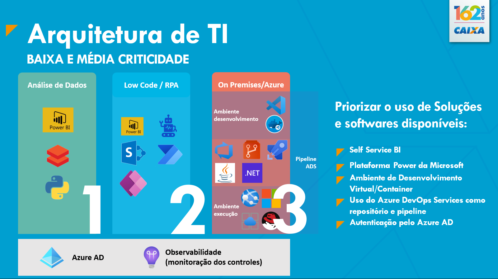

Arquitetura Tecnológica para Departamental
Arquitetura de referência de uso geral
Considerando a estratégia corporativa, novas soluções departamentais, classificadas como de baixa e média criticidade, deverão ser implementadas conforme arquitetura definida neste documento.

Solução departamental
Uma solução departamental pode ser composta pela combinação e uso de uma ou mais opções. Ex: Power BI (opção 1) com acesso à base de dados da solução (opção 3).
Uso Geral: Considerando a estratégia corporativa, novas soluções departamentais, classificadas como de baixa e média criticidade, deverão ser implementadas conforme arquitetura definida neste documento.
Em Definição: Arquitetura para adaptação das soluções departamentais já existentes aos novos controles está em definição.
As opções propostas consideram ordem de complexidade técnica, havendo evolução para o modelo seguinte nos casos em que não for possível atender as necessidades elencadas:
1. Opção: Análise de dados, Data Lake, Power BI:
Opção para uso por autosserviço
Nesta opção serão contempladas as demandas de relatoria, análise de tendências, cruzamento de informações e demais necessidades de tratamento e visualização de dados, provendo gráficos e visões aos times de negócios.
O desenvolvimento dos dashboards e demais ações necessárias a utilização deste modelo são realizadas pelas unidades de negócios, conforme orientações e guias disponíveis. A arquitetura de referência detalhada, bem como os guias de utilização do Power BI e Data Lake é normatizada pela TE 246 - Diretrizes Técnicas do Data Lake CAIXA e OR 200 – Data Lake CAIXA.
2. Opção: Low code, com a Power Platform (Power Automate, Power App), SharePoint, fluxos de atendimento no GSC serviços.caixa, RPA:
Opção para uso por autosserviço
Neste formato serão enquadradas demandas em situação intermediária, cuja necessidade não foi comportada na Opção 1.
Exemplos de utilização deste formato são acompanhamento de evolução de tarefas, atividades da unidade, produtividade do usuário e colaboração.
Esta opção já está disponível para os usuários, demandando ainda definições de governança e controle, incluindo estabelecimento de fluxo de suporte e normatização específica.
Destaca-se que está em prospecção a atualização da solução que sustenta SIGSC - serviços.caixa, que permitirá a retomada de criação de fluxos de atendimento pelas unidades de negócios. ~
Também existe a opção de utilização de solução de RPA, conforme arquitetura de referência disponível em: http://arquiteturati.caixa/arquitetura_referencia/23.05/rpa/rpa/, para RPA está prevista a utilização de dois tipos de usuários: usuários robôs e usuários da solução (matricula do tipo cXXXXXX, as quais possuem uma reserva de numeração para processos do RPA).
3. Opção Desenvolvimento de aplicações com banco de dados em nuvem:
Opção necessita análise prévia pela Tecnologia
Serão tratadas aqui as demandas cujas necessidades não foram atendidas a partir da Opção 1 - Análise de Dados, ou Opção 2 - Solução Low Code.
Aqui time de negócios irá efetivamente desenvolver códigos de programação e criação de estrutura de dados para realizar a implementação da solução.
-
Hospedagem em Nuvem Pública
Para esta opção, deverão ser utilizados serviços em PaaS, por meio de App Services, Static WebSites e banco de dados na modalidade PaaS.
-
Hospedagem no ambiente On Premises ou Nuvem Privada
- Sistema Operacional: Windows Server 2022
- Web Server: IIS 10
-
Linguagens: .NET Core (7.0 ou superior), Script SQL
-
Sistema Operacional: Red Hat 9
- Web Server: Apache, JBOSS
-
Linguagens: Java (11 ou superior), Script SQL
-
Servidor de Banco de Dados: Microsoft SQL Server 2022
- Ferramenta de ETL: SQL Server Integration Services (SSIS)
- Transferência de arquivos: Sterling B2B
O código fonte e scripts DDL – Data Definition Language, serão hospedados em repositório corporativo, (Azure DevOps Services/CAIXA-Departamental) com versionamento e pipeline CI/CD – Continuos Integration/Continuos Delivery e deploy automatizado, sem qualquer manutenção de infraestrutura de servidores pelas unidades de negócios.
3.1. Integrações com demais sistemas
A integração com demais sistemas deverá ocorrer por meio de:
-
APIs - Application Programming Interface; (Adicionar a Organização Departamental como referencial para o rate limite)
-
Arquivos, utilizando o STERLING B2B.
Ambas as soluções permitem configuração dos devidos controles de uso e segurança;
As soluções departamentais poderão utilizar as APIs abaixo relacionadas:
-
API do SIICO, sistema de informações compartilhadas, com dados das unidades, feriados, entre outros.
-
GED – Gerenciamento Eletrônico de Documentos (somente aos documentos da solução departamental).
Está autorizado o consumo de informações classificadas como #PUBLICO ou #INTERNO.TODOS
3.2. Linguagens de programação (Conforme arquitetura de referência corporativa)
-
Angular (Portal Design System CAIXA)
-
Java
-
Microsoft .NET
-
SQL (Structured Query Language)
3.3. Sistemas gerenciador de banco de dados
Os bancos de dados deverão ser utilizados na modalidade PaaS -- Plataforma como Serviço.
- MS SQL Server
A indicação destas tecnologias é baseada na arquitetura atualmente praticada no desenvolvimento corporativo, bem como nos contratos ativos e conhecimento dos times da Tecnologia.
3.4. Autenticação e autorização
Para autenticação e autorização deverá ser utilizado o Azure AD - Azure Active Directory, conforme arquitetura de referência já existente para aplicações intranet.
- (SDAAA) (cli-dep-SDAAA) (será realizado uma consulta para as áreas de TI)
3.5. Observabilidade
Quanto à observabilidade, para acompanhamento efetivo dos controles de segurança e governança, além da performance e atendimento, deverá ser utilizado o App Insights, conforme arquitetura de referência já existente.
3.6. Repositório de código fontes
Para armazenamento dos códigos fontes, deverá ser utilizado o Azure DevOps Services.
Será utilizada uma Organização (CAIXA-Departamental) específica pela necessidade de isolamento do código e políticas de uso.
3.7. Nomes DNS para endereços de acesso
- SDAAA.dep.caixa
- EnderecoAmigavel.dep.caixa (conforme disponibilidade)
- EnderecoAmigavel.caixa (conforme disponibilidade)
Definição de Arquitetura de Segurança para Departamental
As definições apresentadas compõem as configurações mínimas que deverão ser aplicadas, podendo haver incrementado e evoluções para incorporar novas ações.
Os aplicativos deverão conter no mínimo as configurações de segurança a seguir.
- Desabilitar protocolo HTTP e utilizar HTTPS;
- Desabilitar SSL v2, SSLv3, TLS 1.0/ 1.1 e 1.2;
- Utilizar TLS 1.3;
- Não permitir listagem de diretório;
- Desabilitar páginas de erros padrões 404, 403, 500;
- Não ser exposta à Internet;
- Não possuir comunicação com sistemas departamentais em ambiente não seguro;
- Desabilitar acesso anônimo e exigir autenticação;
- Realizar autenticação com Azure AD;
- Possuir gestão de acesso com MAP/MPAS;
- Não armazenas senhas e credenciais em arquivos de configuração ou código;
- Possuir monitoração e alertas no Microsoft Defender for Cloud;
- Definir políticas de DLP;
- Implementar Defender for Container e Azure Devops quando hospedados na esteira.
Aspectos de rede e comunicação
As aplicações departamentais deverão seguir os requisitos mínimos de configurações e recursos de rede, tais como:
- Roteamento de tráfego pela Subscrição de trânsito Hub-Sec;
- Utilização de recursos de conectividade disponíveis, tais como circuitos de dados ExpressRoute e conexão VPN – Virtual Private Network Site-to-Site para os ambientes de NPRD – Não Produção;
- Implementação de controle de políticas de segurança de rede com implementação de regras de firewalls filtrando endereços IPs de origem, destino e portas de destino;
- Utilizar o recurso de grupos de segurança de rede NSGs – Network Security Group da Azure que permitem o controle de tráfego de entrada e saída das VNETs – Virtual Networks;
- Essas regras que definem o tráfego permitido e negado com base em endereços IP, portas e protocolos;
- As NSGs são associadas a sub-redes ou interfaces de rede, aumento o nível de gestão e controle dos hosts;
- Utilização de recursos App Gateway e load balancer, de acordo com cada serviço e aplicação;
- Utilização de alocação de endereçamento IPs, hostnames e FQDN – Full Qualify Domain Names de acordo com padrões estabelecidos.
Histórico da Revisão
| Data | Versão | Descrição | Autor |
|---|---|---|---|
| 07/07/2023 | 1.0 | Criação do documento | SUART09 |
| 26/10/2023 | 2.0 | Inclusão do ambiente On Premises | SUART09 |